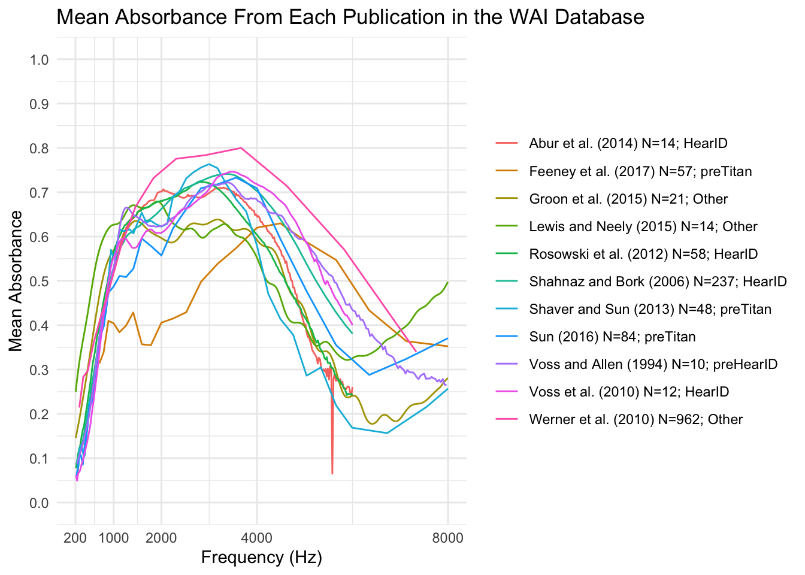
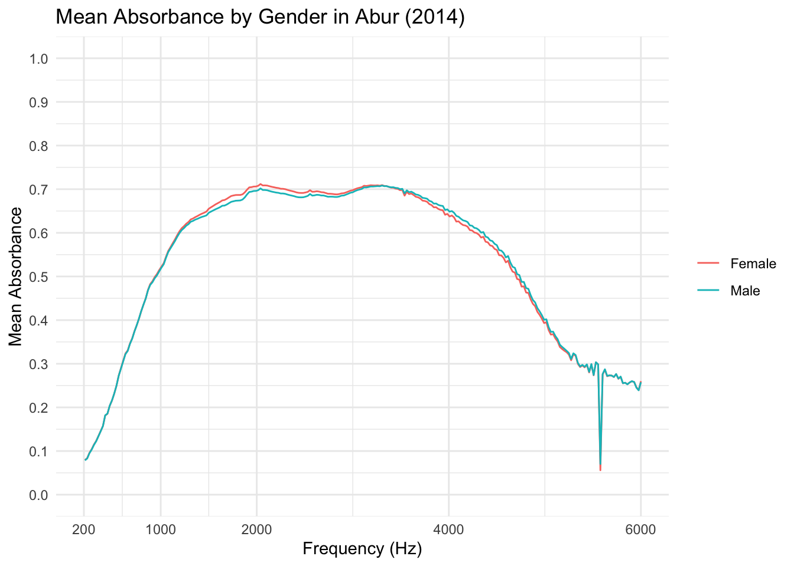

library(RMariaDB)
library(tidyverse)
con_wai <- dbConnect(
MariaDB(), host = "scidb.smith.edu",
user = "waiuser", password = "smith_waiDB",
dbname= "wai"
)
Measurements <- tbl(con_wai, "Measurements")
PI_Info <- tbl(con_wai, "PI_Info")
Subjects <- tbl(con_wai, "Subjects")Mean Absorbance Investigation
Here I recreate figure 1 “Mean Absorbance from Each Publication in the WAI Database” from Voss (2020) using the data from Wideband Acoustic Immittance (WAI) Database hosted by Smith College.
The following SQL query calculates the average absorbance for a series of acoustic or measurement data grouped by frequency, identifier, and instrument. It filters for data associated with specific studies (indicated by their identifiers) and joins this with the study metadata, including author details. Results are grouped and sorted by frequency, identifier, and instrument.
SELECT
m.Frequency,
m.Identifier,
m.Instrument,
AVG(m.Absorbance) AS mean_absorbance,
CONCAT(pi.AuthorsShortList, ' (', pi.Year, ')', ' N=', COUNT(DISTINCT CONCAT(m.SubjectNumber, '-', m.Ear)),'; ', m.Instrument) AS Label
FROM
Measurements m
JOIN
PI_Info pi
ON m.Identifier = pi.Identifier
WHERE
m.Identifier IN ('Abur_2014', 'Feeney_2017', 'Groon_2015', 'Lewis_2015', 'Lui_2008', 'Rosowski_2012', 'Shahnaz_2006', 'Shaver_2013', 'Sun_2016', 'Voss_1994', 'Voss_2010', 'Werner_2010')
GROUP BY
m.Frequency,
m.Identifier,
m.Instrument,
pi.Year,
pi.AuthorsShortList
ORDER BY
m.Frequency,
m.Identifier,
m.InstrumentThis R code creates a plot of mean absorbance from each study.
ggplot(new_table, aes(x = Frequency, y = mean_absorbance, color = Label)) +
geom_line(size = 0.5, na.rm = TRUE) +
scale_x_continuous(
name = "Frequency (Hz)",
breaks = c(200, 1000, 2000, 4000, 8000),
limits = c(200, 8000)
) +
scale_y_continuous(
name = "Mean Absorbance",
limits = c(0, 1),
breaks = seq(0, 1, by = 0.1)
) +
labs(
title = "Mean Absorbance From Each Publication in the WAI Database",
color = NULL
) +
theme_minimal()
Analyzing the plot, I see that mean absorbance sharply increases up to around 1000Hz and remains high before decreasing after 4000Hz.
Next, I will use the data collected by Abur (2014) to examine difference in mean absorbance between sexes. The following SQL query calculates the average absorbance for ‘Abur_2014,’ grouped by frequency and sex of the subjects, while excluding entries where the sex is unknown. It joins two tables, Measurements and Subjects, using a shared subject identifier. The results are grouped by frequency and sex, with the averages computed for each group, and the output is sorted by frequency and sex. This provides a clear breakdown of absorbance patterns by these two attributes.
SELECT
m.Frequency,
s.Sex,
AVG(m.Absorbance) AS mean_absorbance_sex
FROM
Measurements m
JOIN
Subjects s
ON
m.SubjectNumber = s.SubjectNumber
WHERE
m.Identifier = 'Abur_2014'
AND s.Sex != 'Unknown'
GROUP BY
m.Frequency, s.Sex
ORDER BY
m.Frequency, s.Sex;This R code creates a plot of mean absorbance by sex in the study by Abur (2014).
library(ggplot2)
ggplot(new_table4, aes(x = Frequency, y = mean_absorbance_sex, color = Sex)) +
geom_line(size = 0.5, na.rm = TRUE) +
scale_x_continuous(
name = "Frequency (Hz)",
breaks = c(200, 1000, 2000, 4000, 6000),
limits = c(200, 6000)
) +
scale_y_continuous(
name = "Mean Absorbance",
limits = c(0, 1),
breaks = seq(0, 1, by = 0.1)
) +
labs(
title = "Mean Absorbance by Gender in Abur (2014)",
color = NULL
) +
theme_minimal()
Analyzing the plot, I see that mean absorbance is very similar between sexes. Males have slightly higher mean absorbance from 1500Hz to 3500Hz, where it then swaps to females having slightly higher mean absorbance from 3500Hz to 5000Hz.